Remote Platform Erase (RPE)
Intel® Remote Platform Erase (RPE) allows IT administrators to remotely wipe a supported Intel vPro® system and restore it to a known manufacturer baseline (its "golden state") using Intel AMT's out-of-band (OOB) connection. It is used when decommissioning systems, preparing devices for reuse, or recovering a machine from a compromised state.
Supported Erase Options¶
Console exposes three erase actions, which can be selected individually or together:
-
Secure Erase of All SSDs: Removes all content from ATA and NVM drives through a combination of media erase and crypto erase.
-
TPM Clear: Deletes all keys created in the Trusted Platform Module (TPM) and any data protected by those keys, such as a virtual smart card or a login PIN.
-
Restore BIOS to EOM State: Restores the BIOS to the End of Manufacture (EOM) golden configuration specified by the system designer.
This Operation Is Irreversible
RPE permanently destroys data on the target system. Erased drives, cleared TPM keys, and overwritten BIOS settings cannot be recovered. Confirm you have selected the correct device before initiating an erase.
Where to Start¶
- To confirm the device can run RPE and expose the feature in Console, start with Verify and Enable RPE Support.
- To run an erase on a device that is already enabled, go to Triggering a Remote Platform Erase.
- To confirm the erase completed as expected, continue with Verifying the Erase.
Prerequisites¶
Before you start, confirm the target device meets all of these:
-
Console is connected to the device over TLS.
-
Its BIOS and firmware support Remote Platform Erase. Console disables any erase action the platform does not report as supported, so the available options can differ between devices.
-
Remote Platform Erase is enabled in the target's BIOS menu. This cannot be set from Console, and it is the most common reason an erase fails. If you are following Preparing a Test Device below, check it while you are already in the BIOS menu.
-
The Remote Platform Erase feature is enabled for the device in Console. See Verify and Enable RPE Support below.
Supported across activation modes
Remote Platform Erase is available regardless of activation mode, including devices activated in Client Control Mode (CCM) and Admin Control Mode (ACM).
Each requirement is explained in full, including the firmware versions Intel requires, in the Remote Platform Erase reference.
Verify and Enable RPE Support¶
-
Open Console and navigate to the Devices tab on the left-hand menu, then select your target device.
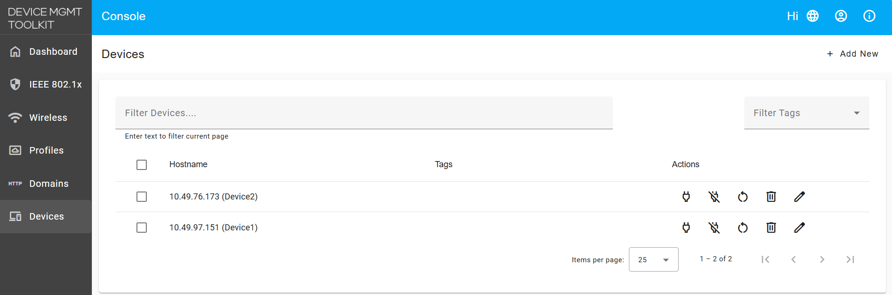
-
In the General AMT Info section, check the AMT Enabled Features panel and confirm Remote Platform Erase is listed.
Remote Platform Erase availability
Confirm the Remote Platform Erase checkbox is available and not greyed out, as shown in the snapshot below. A greyed-out checkbox means the platform does not support the feature.
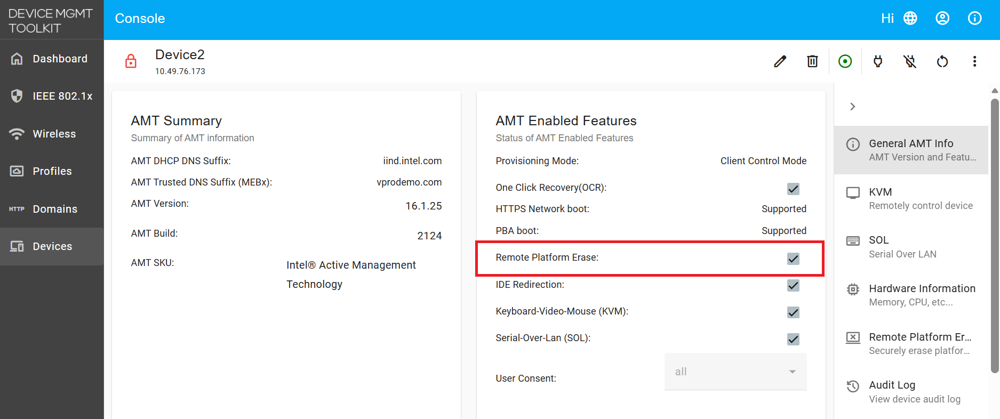
-
Select the Remote Platform Erase tab in the device navigation on the right.
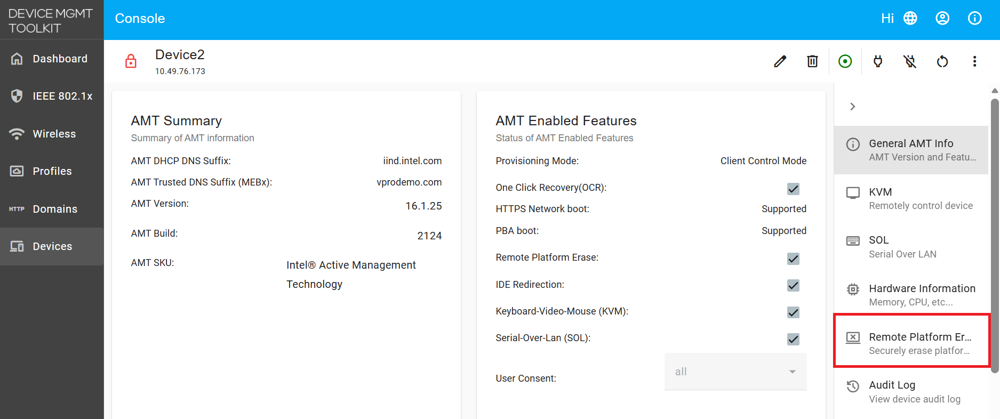
-
Make sure Enable Remote Platform Erase on this device is switched on. This is the same setting as the Remote Platform Erase checkbox on the AMT Enabled Features panel, so it is already on if you enabled it there. The erase options below it stay inactive until it is on.
Remote Platform Erase on Intel® Standard Manageability (ISM) devices
On Intel® Standard Manageability (ISM) devices, Remote Platform Erase is not supported. The Remote Platform Erase checkbox appears disabled with the tooltip Remote Platform Erase is not supported, and the Remote Platform Erase tab displays the same message. This limitation is determined by the device's firmware.
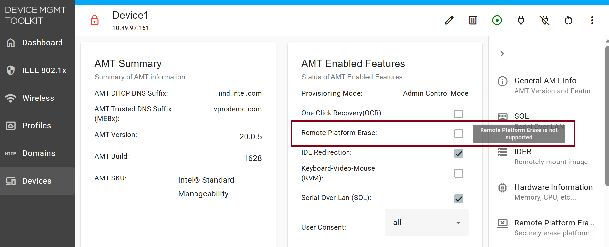
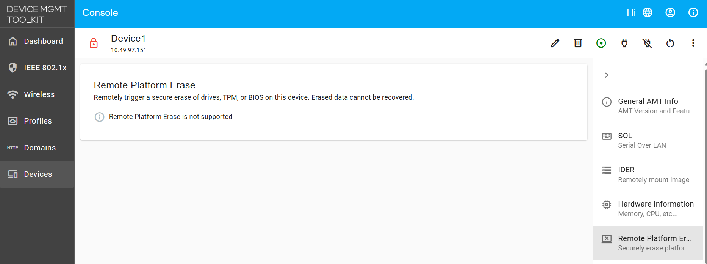
Preparing a Test Device (Optional)¶
If you are demonstrating or validating RPE rather than erasing a production machine, change the device's state first so the restoration is visible afterwards. Skip this section for a real erase.
Record the TPM State¶
-
Open a terminal on the target system, either locally or over SSH/KVM.
-
List the persistent handles currently stored in the TPM:
sudo tpm2_getcap handles-persistent -
Confirm the command returns active persistent handle addresses, indicating existing TPM data.
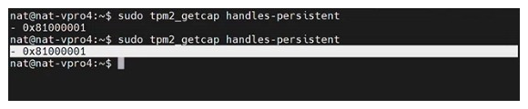
Change BIOS Settings¶
-
Boot the device into BIOS, either through KVM or a manual reboot.
-
Under the power and thermal settings, change the following values away from their defaults:
Setting Default Change To Ambient Temperature Tolerance 35°C40°CDynamic Support Options Enabled Disabled After Power Failure (Secondary Power Settings) Always Power OffPower On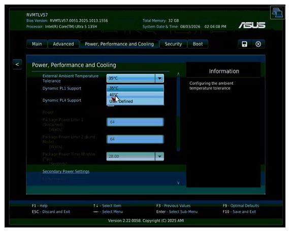
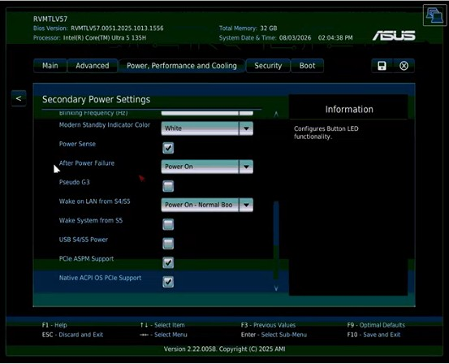
-
Save the changes and exit BIOS.
Triggering a Remote Platform Erase¶
-
Select the erase capabilities to run. Any combination of the supported options can be selected:
- Secure Erase of All SSDs
- TPM Clear
- Restore BIOS to EOM State
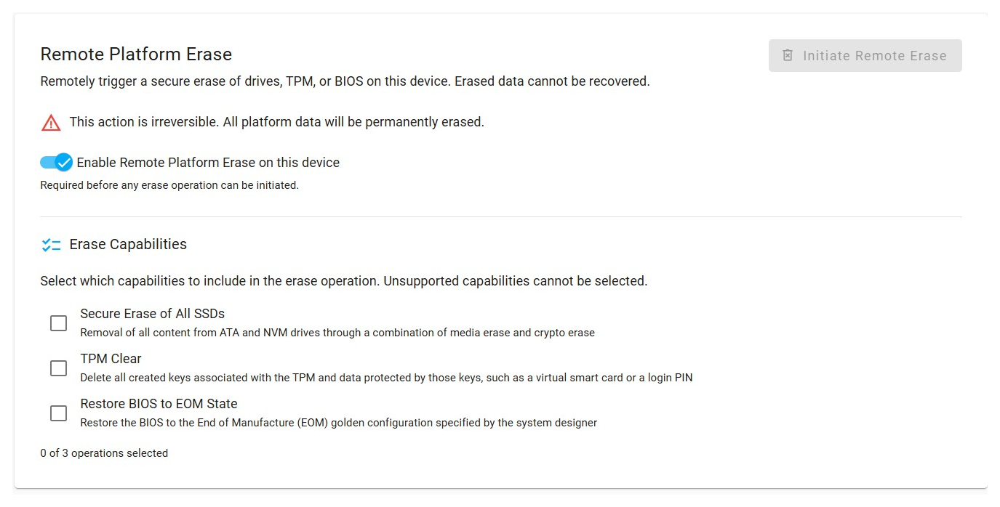
Secure Erase of All SSDs removes the operating system
This option erases every attached SSD, including the drive the operating system is installed on. After it completes, the device cannot boot and an operating system must be reinstalled before the machine can be used again. Console reports this on success with the message OS drive erased successfully. Please reinstall an operating system before using this device.
Encrypted drives need a drive password - not yet validated
When you select Secure Erase of All SSDs, a checkbox labelled SSD requires disk encryption key appears below it. Tick it if the drive is self-encrypting, and a Drive Password field appears. Console passes that password to Intel AMT as the drive password for the erase operation. Leave both controls alone for drives that are not encrypted.
Erasing an encrypted drive has not been tested end to end yet. The controls above are present in Console, but the full flow has not been validated. This section will be updated with detailed steps once it has.
-
Optionally, start a KVM session if you want to observe the reboot and erase process.
-
Click Initiate Remote Erase in the top right.
CCM devices prompt for a user consent code
Devices activated in Client Control Mode (CCM) default to requiring consent for all features, so Console prompts for a 6-digit User Consent Code before the confirmation dialog appears. Enter the code shown on the target device's local display, then continue. Devices with User Consent set to None, as ACM profiles typically are, skip this step.
-
Review the confirmation dialog, which describes exactly which actions will run, and click YES to confirm.
Point of No Return
Clicking YES immediately restarts the device and applies the selected erase actions. There is no cancel or undo once the operation begins.
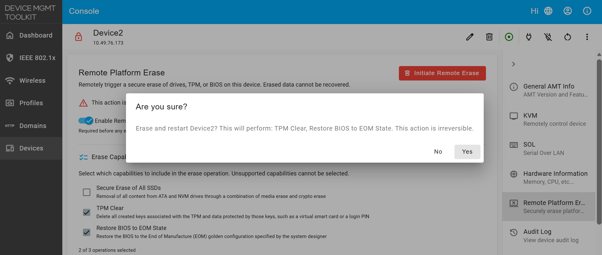
-
The device restarts automatically and performs the selected erase and restore actions during boot.
Triggering Remote Platform Erase via Console APIs¶
You can use the Console REST APIs to trigger remote platform erase programmatically. This section describes the API endpoints, authentication, and step-by-step examples.
API Reference¶
| Endpoint | Method | Description | Request Body |
|---|---|---|---|
/api/v1/amt/boot/remoteErase/<GUID> |
GET | Retrieve supported erase capabilities for a device | N/A |
/api/v1/amt/boot/remoteErase/<GUID> |
POST | Trigger remote platform erase | {"secureEraseAllSSDs":true,"tpmClear":true,"restoreBIOSToEOM":true,"unconfigureCSME":false,"ssdPassword":""} |
-
Authenticate and Get Login Token
First, authenticate with Console and retrieve a JWT token to use for all subsequent API calls:
curl --insecure -X POST https://<IP_ADDRESS_OR_FQDN_OF_SERVER>/api/v1/authorize -H "Content-Type:application/json" -d "{\"username\":\"<CONSOLE_USERNAME>\",\"password\":\"<CONSOLE_PASSWORD>\"}"Example Response:
{"token":"<YOUR_JWT_TOKEN>"}Save this token to use in the
Authorizationheader for the next steps. -
Retrieve Connected Devices
Fetch the list of connected devices to identify the target device's GUID:
curl --insecure https://<IP_ADDRESS_OR_FQDN_OF_SERVER>/api/v1/devices -H "Authorization: Bearer <YOUR_JWT_TOKEN>"Example Response:
[ { "guid": "5d52da54-199c-cc3c-3e96-88aedd668dff", "hostname": "Device2", } ]Next Steps: Select the GUID of your target device (e.g.,
5d52da54-199c-cc3c-3e96-88aedd668dff) for use in subsequent steps. -
Check RPE Support and Available Capabilities
Verify that the target device supports remote platform erase and determine which erase capabilities are available:
curl --insecure https://<IP_ADDRESS_OR_FQDN_OF_SERVER>/api/v1/amt/boot/remoteErase/<DEVICE_GUID> -H "Authorization: Bearer <YOUR_JWT_TOKEN>"Example Response:
{ "secureEraseAllSSDs": true, "tpmClear": true, "restoreBIOSToEOM": true, "unconfigureCSME": false }If all capabilities return
false, the device does not support remote platform erase. This commonly occurs on devices using Intel® Standard Manageability (ISM), which do not have AMT remote erase capabilities. -
Trigger Remote Platform Erase
Send the erase request with your selected capabilities. At least one capability must be set to
true:curl --insecure -X POST https://<IP_ADDRESS_OR_FQDN_OF_SERVER>/api/v1/amt/boot/remoteErase/<DEVICE_GUID> -H "Content-Type:application/json" -H "Authorization: Bearer <YOUR_JWT_TOKEN>" -d "{\"secureEraseAllSSDs\":true,\"tpmClear\":true,\"restoreBIOSToEOM\":true,\"unconfigureCSME\":false,\"ssdPassword\":\"\"}"Request Payload Fields: -
secureEraseAllSSDs(boolean): Securely erase all SSDs via media and crypto erase -tpmClear(boolean): Delete all TPM keys and data -restoreBIOSToEOM(boolean): Restore BIOS to manufacturer defaults (End of Manufacture golden state) -unconfigureCSME(boolean): Fully unprovision Intel CSME firmware and AMT (removes device from Console) -ssdPassword(string, optional): Drive password for encrypted SSDs (leave empty for unencrypted drives)Expected Response (on success):
{"status":"success"}Encrypted SSDs and drive passwords
If you have self-encrypting SSDs and
secureEraseAllSSDsis set totrue, provide the drive password in thessdPasswordfield. Encrypted erase has not been fully tested end to end. Leave this field empty for unencrypted drives.CCM devices and user consent
On Client Control Mode (CCM) devices, the API will prompt for a 6-digit user consent code from the device's local display before proceeding. Provide this code when prompted.
-
Verify the Erase Completed
After the device reboots and erase operations complete, follow the verification steps in Verifying the Erase to confirm all selected capabilities were applied.
Triggering Remote Platform Erase via MPS APIs¶
For cloud deployments using the Management Presence Server (MPS), you can trigger remote platform erase through the MPS REST APIs. This section provides API endpoints and step-by-step examples.
API Reference¶
| Endpoint | Method | Description | Request Body |
|---|---|---|---|
/mps/api/v1/amt/boot/remoteErase/<GUID> |
GET | Retrieve supported erase capabilities for a device | N/A |
/mps/api/v1/amt/boot/remoteErase/<GUID> |
POST | Trigger remote platform erase | {"secureEraseAllSSDs":true,"tpmClear":true,"restoreBIOSToEOM":true,"unconfigureCSME":false,"ssdPassword":""} |
-
Authenticate and Get Login Token
First, authenticate with MPS and retrieve a JWT token to use for all subsequent API calls:
curl --insecure -X POST https://<IP_ADDRESS_OR_FQDN_OF_SERVER>/mps/login/api/v1/authorize -H "Content-Type:application/json" -d "{\"username\":\"<MPS_WEB_ADMIN_USER>\",\"password\":\"<MPS_WEB_ADMIN_PASSWORD>\"}"Example Response:
{"token":"<YOUR_JWT_TOKEN>"}Save this token to use in the
Authorizationheader for the next steps. -
Retrieve Connected Devices
Fetch the list of devices connected to MPS to identify the target device's GUID:
curl --insecure https://<IP_ADDRESS_OR_FQDN_OF_SERVER>/mps/api/v1/devices -H "Authorization: Bearer <YOUR_JWT_TOKEN>"Example Response:
[ { "guid": "5d52da54-199c-cc3c-3e96-88aedd668dff", "hostname": "Device2", } ]Next Steps: Select the GUID of your target device (e.g.,
5d52da54-199c-cc3c-3e96-88aedd668dff) for use in subsequent steps. -
Check RPE Support and Available Capabilities
Verify that the target device supports remote platform erase and determine which erase capabilities are available:
curl --insecure https://<IP_ADDRESS_OR_FQDN_OF_SERVER>/mps/api/v1/amt/boot/remoteErase/<DEVICE_GUID> -H "Authorization: Bearer <YOUR_JWT_TOKEN>"Example Response:
{ "secureEraseAllSSDs": true, "tpmClear": true, "restoreBIOSToEOM": true, "unconfigureCSME": false }If all capabilities return
false, the device does not support remote platform erase. This commonly occurs on devices using Intel® Standard Manageability (ISM), which do not have AMT remote erase capabilities. -
Trigger Remote Platform Erase
Send the erase request with your selected capabilities. At least one capability must be set to
true:curl --insecure -X POST https://<IP_ADDRESS_OR_FQDN_OF_SERVER>/mps/api/v1/amt/boot/remoteErase/<DEVICE_GUID> -H "Content-Type:application/json" -H "Authorization: Bearer <YOUR_JWT_TOKEN>" -d "{\"secureEraseAllSSDs\":true,\"tpmClear\":true,\"restoreBIOSToEOM\":true,\"unconfigureCSME\":false,\"ssdPassword\":\"\"}"Request Payload Fields: -
secureEraseAllSSDs(boolean): Securely erase all SSDs via media and crypto erase -tpmClear(boolean): Delete all TPM keys and data -restoreBIOSToEOM(boolean): Restore BIOS to manufacturer defaults (End of Manufacture golden state) -unconfigureCSME(boolean): Fully unprovision Intel CSME firmware and AMT (removes device from MPS) -ssdPassword(string, optional): Drive password for encrypted SSDs (leave empty for unencrypted drives)Expected Response (on success):
{"status":"success"}Encrypted SSDs and drive passwords
If you have self-encrypting SSDs and
secureEraseAllSSDsis set totrue, provide the drive password in thessdPasswordfield. Encrypted erase has not been fully tested end to end. Leave this field empty for unencrypted drives.CCM devices and user consent
On Client Control Mode (CCM) devices, the API will prompt for a 6-digit user consent code from the device's local display before proceeding. Provide this code when prompted.
-
Verify the Erase Completed
After the device reboots and erase operations complete, follow the verification steps in Verifying the Erase to confirm all selected capabilities were applied.
Error Handling¶
The following error responses apply to both Console and MPS API endpoints:
| HTTP Status | Error | Cause | Solution |
|---|---|---|---|
| 400 | Bad Request | No erase capability selected or invalid request payload | Select at least one capability: secureEraseAllSSDs, tpmClear, restoreBIOSToEOM, or unconfigureCSME |
| 401 | Unauthorized | Invalid or expired JWT token | Re-authenticate and obtain a new token |
| 404 | Not Found | Device GUID does not exist or device is not connected | Verify the GUID from the devices list and confirm the device is online |
| 500 | Internal Server Error | RPE is not enabled in BIOS, or device connection was lost | Enable RPE in device BIOS and ensure device is online |
Verifying the Erase¶
Once the device has finished its reboot cycle, confirm each selected capability was applied.
These checks need a working operating system
The TPM check below runs from a terminal on the target system. If you selected Secure Erase of All SSDs, the operating system has been erased and the device will not boot, so you cannot run it until an operating system has been reinstalled. The BIOS check does not need an operating system and can be done on any erased device.
Confirm the TPM Was Cleared¶
-
Log back into the target system and open a terminal. If the OS drive was erased, reinstall an operating system first.
-
Run the TPM capability command again:
sudo tpm2_getcap handles-persistent -
Confirm the command returns no persistent handles, showing the TPM has been fully cleared.
Confirm the BIOS Was Restored¶
-
Boot into BIOS on the target system through KVM.
-
Confirm the settings changed earlier are back at their manufacturer defaults:
Setting Restored Value Ambient Temperature Tolerance 35°CDynamic Support Options Enabled After Power Failure (Secondary Power Settings) Always Power Off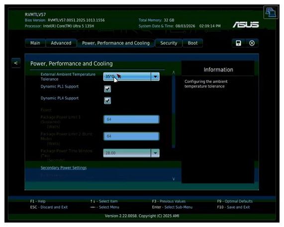
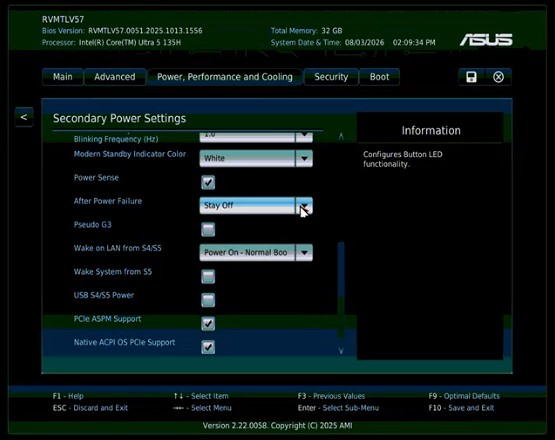
Troubleshooting¶
Remote Platform Erase is not enabled by the BIOS on this device¶
The BIOS-side setting is off. Console can only enable the Console-side toggle; the BIOS setting must be turned on directly on the target machine. Reach the BIOS menu over KVM or locally, enable Remote Platform Erase, and retry. See Verify and Enable RPE Support.
Erase capability checkboxes are greyed out¶
A disabled erase option indicates the device does not support that particular capability. This is determined by the device's hardware and firmware and cannot be changed from Console. Check the AMT Enabled Features panel to see which erase capabilities your device supports.
SSD password must not exceed 64 bytes¶
The Drive Password field for an encrypted SSD has a 64-byte limit. Shorten the password and retry.
Erase fails to initiate, or power status cannot be read¶
Before initiating an erase, Console queries the device's current power state to determine whether to power on or restart the device. If this communication fails—for example, because the device is offline or the connection was interrupted—the erase cannot proceed. Ensure the device is online and the Console connection is stable, then retry.
Erase reports success, but the change is not visible¶
- TPM Clear: After the device reboots, run
sudo tpm2_getcap handles-persistenton the device to verify the TPM has been cleared. If persistent handles are still present, collect diagnostic logs from both Console and the device, then contact support. - Restore BIOS to EOM State: Verify you are checking the correct BIOS setting and that the device has fully rebooted after the erase operation completes.
- Secure Erase of All SSDs: The OS is erased along with the data. The device cannot boot until you reinstall an operating system. This is the expected behavior.
Unconfigure CSME performs a full unprovision... / device disappears from Console¶
This is expected behavior. Selecting this option fully removes all AMT provisioning from the device, causing it to disappear from Console. The device cannot be remotely managed again until it is reprovisioned. This option is hidden by default in Console; if exposed by another tool, treat it as a separate operation distinct from the hardware erase capabilities.
Prompted for a user consent code, or the code request fails¶
Client Control Mode (CCM) devices require a user consent code as a security measure. A 6-digit code appears on the device's local display; enter this code in Console to proceed. If the code request fails or the code is rejected, ensure the device is online and has a working display connected, then retry.
If you see any issues, please log them on our GitHub Issues page or reach out to us on our Discord channel.